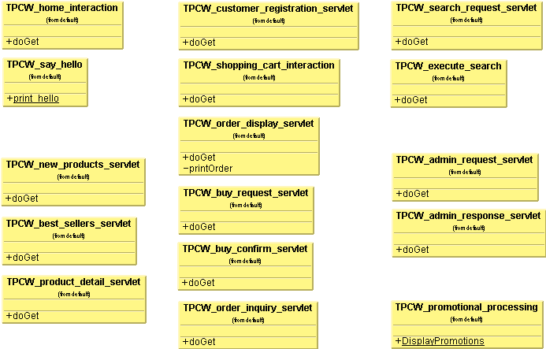

TPC-W Java Implementation
Implementation
| API |
| Design |
|
The application is completely based on servlets, all HTML is generated by them. Every servlet represents one of the 14 TPC-W bookstore actions. Here are the servlets and some supporting classes (TPCW_say_hello, TPCW_promotional_processing) as a class diagramm: 
The following class diagram shows all general supporting classes for the servlets.  |